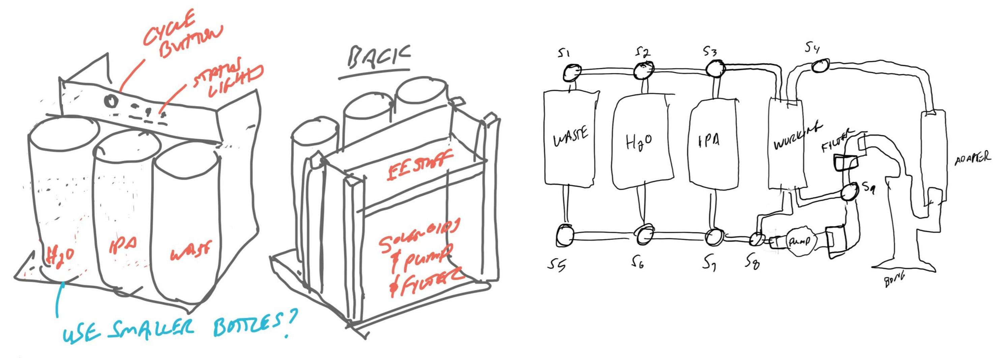
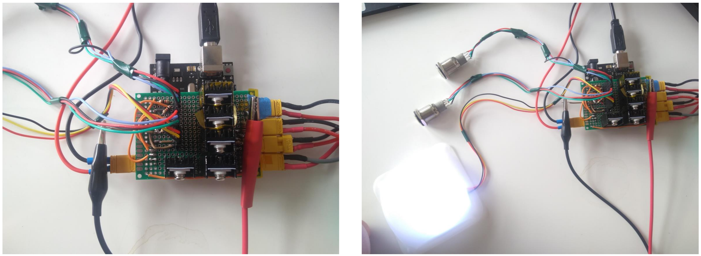
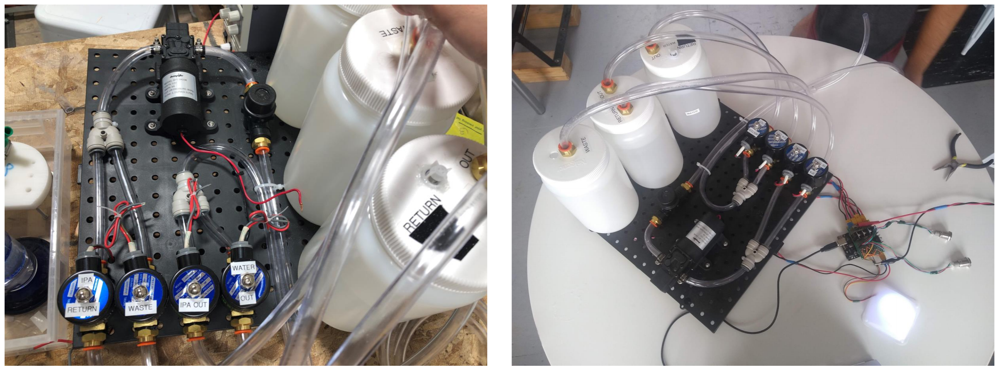
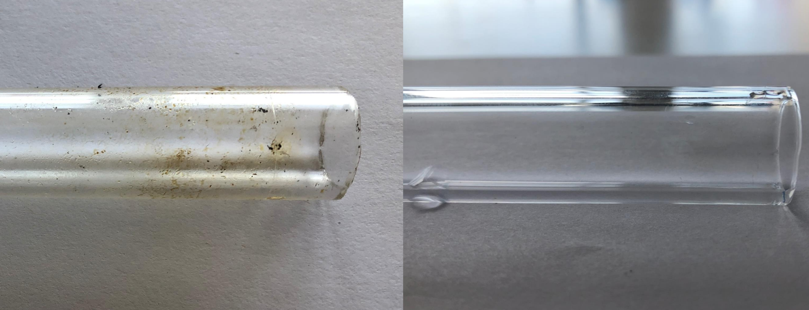
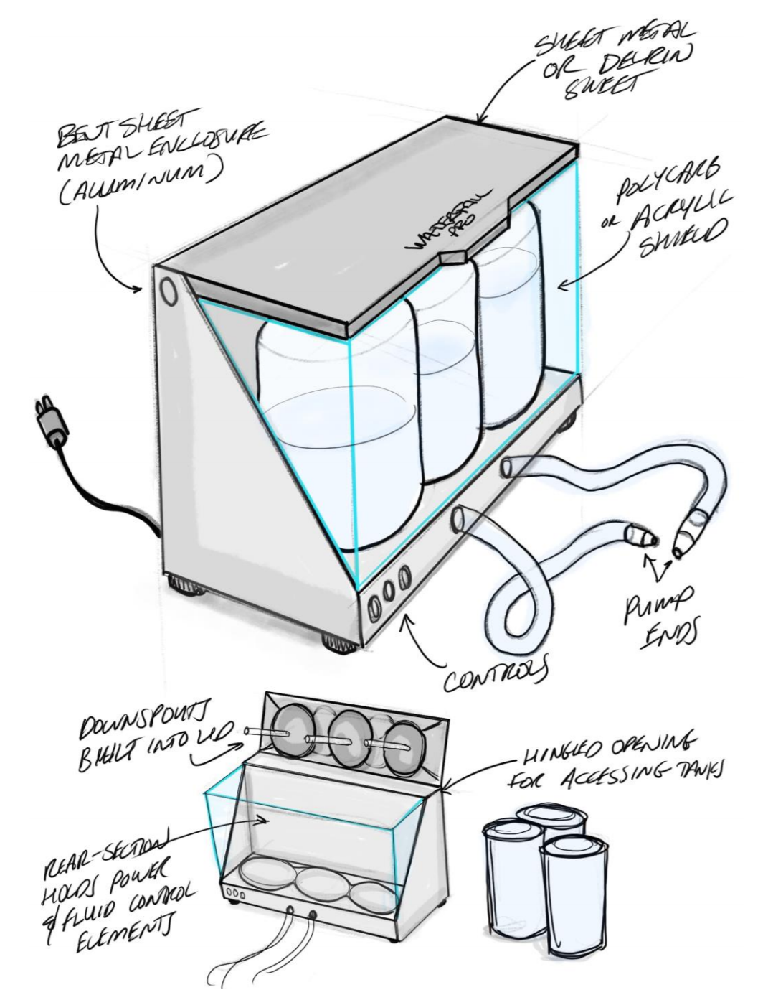

I worked on this product very extensively as the head electrical engineer during my time at Facture Design. The birth of this project came from the recent legalization of marijuana in Seattle - with this came many cannibis related product ideas and investors willing to try their hand at a new market. As such, a client came to our firm proposing that we:
“create an adaptable glassware cleaning device and develop a functional proof-of-concept prototype that exists in its most basic arrangement as a pump, reservoir, tubing and fittings, potentially residing within an enclosure”
This was a fun, challenging, and interesting project as we created an over-engineered and robust device for performing the task of, that's right... cleaning a bong.
To begin the design process, we started with architecture exploration and some initial industrial design. This included examining what parts we would buy, investigating how we would clean the bong, and defining the user experience. After extensive research, we chose to utilizee a pump and solenoids to redirect different cleaning agents through the ports of the bong. An initial wash of water would flush the larger chunks off of the bong into a waste container. Following this, a cyclee of isopropyl alcohol (IPA) would disenfect and deep clean the inside of the bong. Lastly, another water rinse cycle would wash out any remaining debris and the remnants of IPA in the bong. Some of our initial sketches can be seen below.
Next, we investigated these parts, determining the minimum hardware we would need to bring this idea to life. We were able to redesign the functional parts to include just four solenoid valves, one 12 V pump, an arduino microcontrollere, 3 buttons, indicator LEDs, and some passive electrical components. Lastly, we defined what the product would look like and the user experience. Some of our initial sketches can be seen below. Three buttons are on the front panel of the device. One is a power button, one is a go button, and one is a stop button.
After this initial design phase, the team jumped straight into lean prototyping, aiming to get an initial prototype functional as fast as we could. I worked specifically on the electronics. The good news with this project was that the electronics were actually pretty basic, such that I could draw out the circuit by hand. I breadboarded an initial version getting the solenoid working through the transistors, implementing the correct light outputs, and testing the software state diagram I had coded up.

Next, I worked on making the circuit more robust by moving it onto a soldered protoboard, able to handle the large current of the solenoids and pump and resist a good ammount of wear and tear from jostling. I added header pins to the protoboard to inegrate the buttons and lights for modular design/hot swapping parts and XT30 connectors for reliable power to the solenoids.
Lastly, the team was able to integrate the mechanical and electrical components together and begin making the device look pretty. We added a standalone 12V power supply, a cable management system, a frosted front face, two retractable bong nozzles, and hid the three tanks (water, IPA, waste) in the back.
The most important part of the product delivery was testing and being able to show that our device worked effectively. We started testing by creating uniformly dirty glass tubes artificially. This was done with a mechanical lung and several glass tubes cut to size. These dirty tubes were tested with different duration washes in order to expirement with the effectiveness of the wash cycles.
After developing a reliable methodology, we then began to test with extreme cases of dirty bongs. Some of these before and afters are shown in the media below. As seen, our device was extremely successful in the cleaning process and proved its effectiveness and efficiency empirically.


This proof of concept device holds a lot of promise for a final product. In handing off the idea and prototype to our client, we also made somee final industrial design sketches on what the device could look like as a product.
